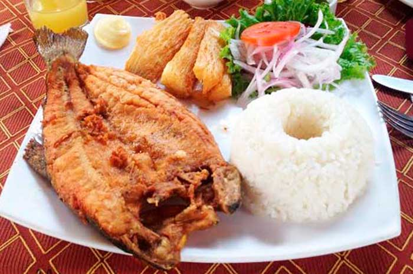
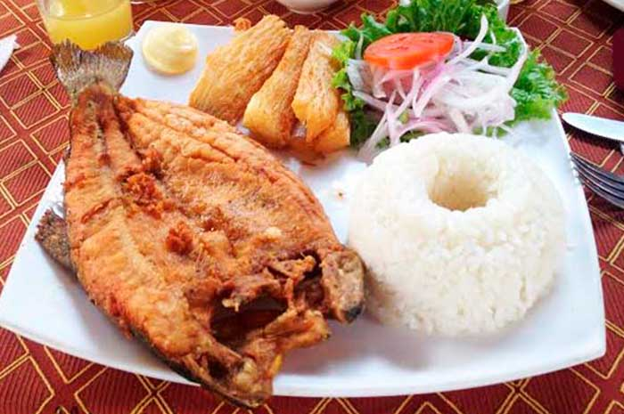
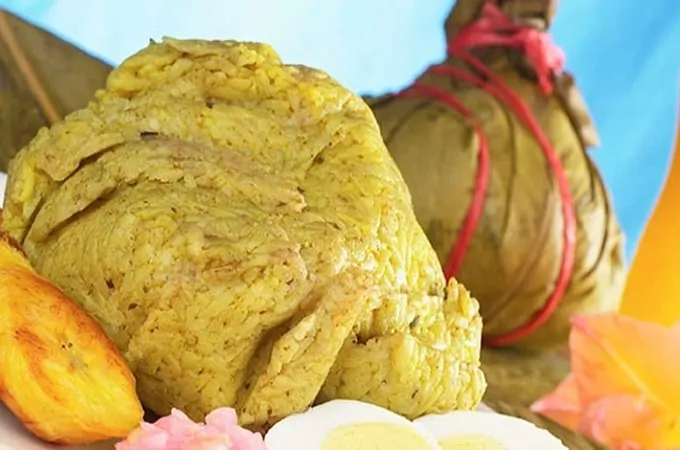
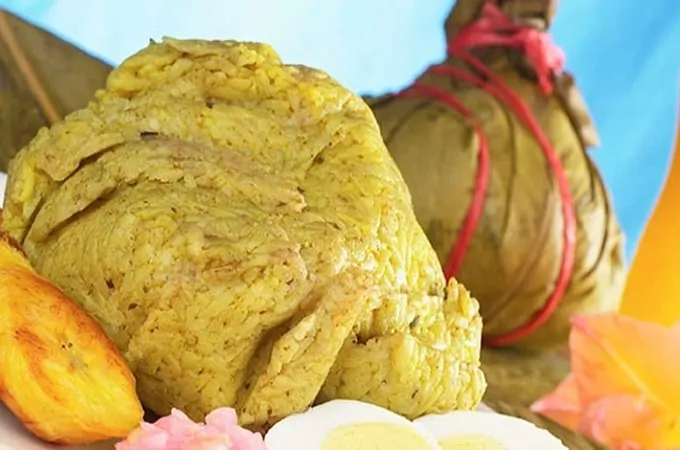

Platos de "SIERRA"
posee la sierra del Perú, la gastronomía andina se caracteriza por llevar a la mesa gran variedad de alimentos nutritivos como son la papa, el camote, las habas, el maíz, entre otros.
Descubre
Menu
Pide tu menú desde la comodidad de tu casa, centro de trabajo o en el lugar donde te encuentres.Tenemos:Cuy Chactado, Trucha Frita,Ollucos con Charqui,Chicharrón de Chancho.
Pide el menu 

Platos de "COSTA"
No puede faltar el banano, los mariscos y el maní para crear exquisitas combinaciones que se degusta en todo el país. Debido a la cercanía con el mar, el consumo de pescados y mariscos como el cangrejo, camarón, pulpo, entre otros, son los ingredientes que predominan en sus platos típicos.


Degusta
Delisioso menu
Queremos ofrecerte siempre lo mejor y por eso te traemos más opciones deliciosas en nuestro menú congelado saludable. Te recordamos que podes acceder a nuestra variedad de menús en nuestros local o pedirlos para delivery y disfrutar de un delicioso almuerzo o cena en el trabajo, la facultad o donde estes.Tenemos:Tallarines Verdes. Locro de Zapallo. Lomo Saltado. Tallarines Rojos. Cau Cau. Picante de Mariscos. Estofado de Pollo. Ceviche de Pescado.
Has una reservacionPlatos de "SELVA"
La gastronomía amazónica nos ofrece deliciosos platillos preparados con productos y prácticas ancestrales que se expresan en cada preparación. Yuca, pescados de agua dulce, pollo, chontacuros y más ingredientes son utilizados para crear comida inigualable, en las entrañas de la selva de la Amazonía ecuatoriana.

 

Degusta
Delisioso menu
Queremos ofrecerte siempre lo mejor y por eso te traemos más opciones deliciosas en nuestro menú congelado saludable. Te recordamos que podes acceder a nuestra variedad de menús en nuestros local o pedirlos para delivery y disfrutar de un delicioso almuerzo o cena en el trabajo, la facultad o donde estes.Tenemos:JUANE,TACACHO CON CECINA Inchicapi.
Pide el menu